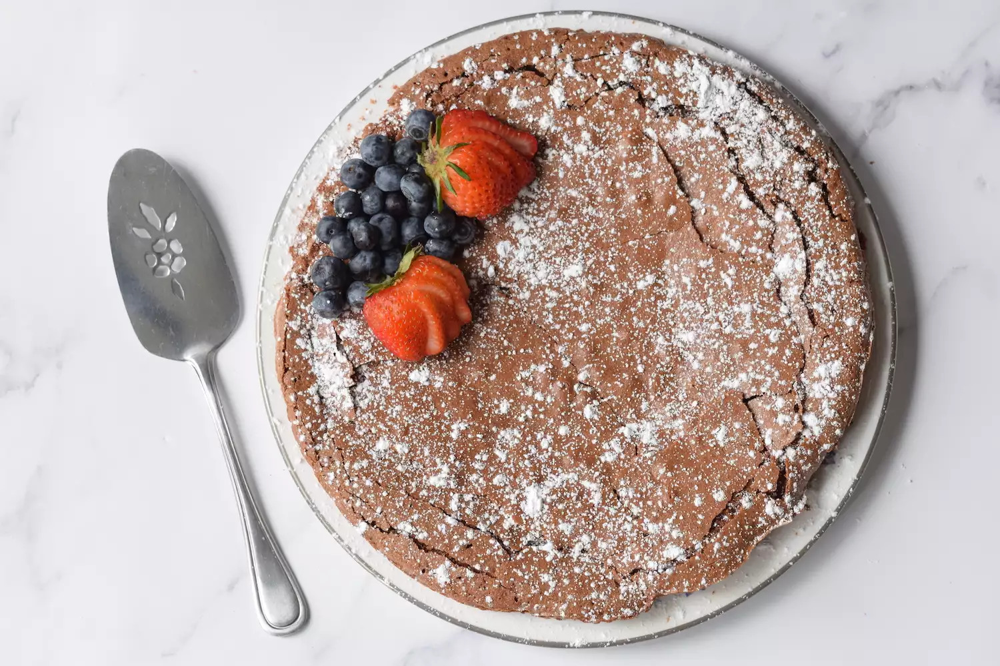

Passover Chocolate Torte

Description
Garnish with a sprinkle of sugar and some strawberries! The center will be a little fudgy tasting! There are
never any leftovers to worry about.
Ingredients
- ½ cup pareve margarine
- 8 ounces semisweet chocolate, chopped
- 5 eggs, separated
- ¾ cup white sugar
- 1 cup ground almonds
Steps
- Preheat oven to 350 degrees F (175 degrees C). Line bottom and sides of a 9 inch springform pan with foil.
Grease foil.
-
Melt margarine and chocolate over low heat. Stir until smooth and let cool.
- In a medium-size mixing bowl, beat whites until stiff; about 2 minutes. In a separate bowl, beat together
yolks and sugar until thick and pale; about 1 minute. Blend in chocolate mixture and stir in almonds. Fold
in beaten whites, 1/3 at a time, into chocolate until no streaks of white remain. Scrape into prepared pan.
- Place an 8 inch baking pan with 1 inch of water in it on the bottom rack of the oven (to make the torte more
moist).
- Bake torte on center rack at 350 degrees F (175 degrees C) for 45 to 50 minutes, or until sides begin to
pull away from pan and top is set in center. Cover the torte loosely with foil for the last 20 minutes of
baking. Note: Don't worry if the cake cracks because the top will be on the bottom later.
- Cool on wire rack for 10 minutes and then carefully remove sides of pan. Invert onto a serving plate and
cool completely.